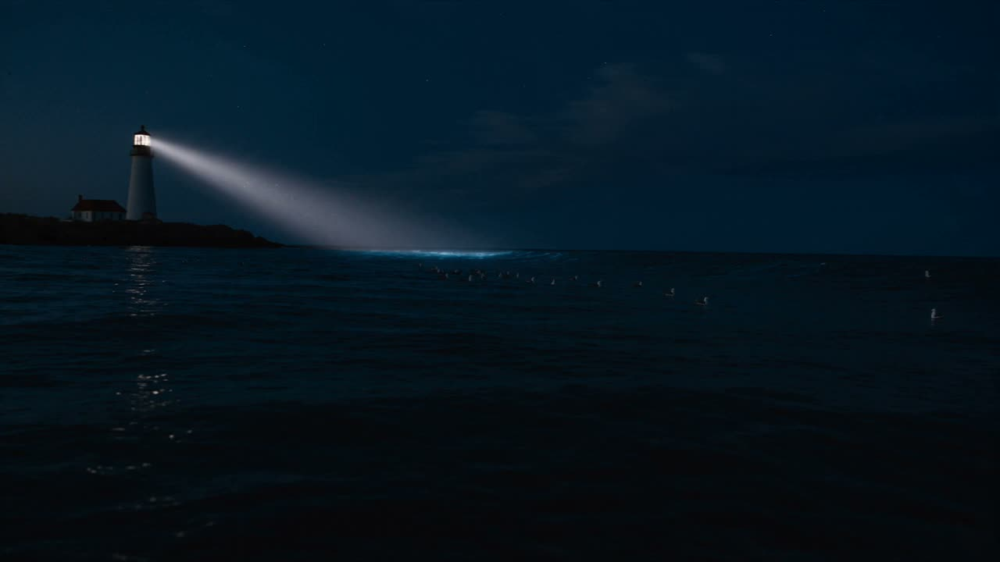

An idea is all it takes.
Free AI video generator
A few words. A short film. Start with one free video a day.
A golden koi glides through clouds above a mountain temple at sunrise.
Seedance 2.5 ⌄16:9 ⌄＋ Reference image

An idea is all it takes.
A few words. A short film. Start with one free video a day.
A golden koi glides through clouds above a mountain temple at sunrise.